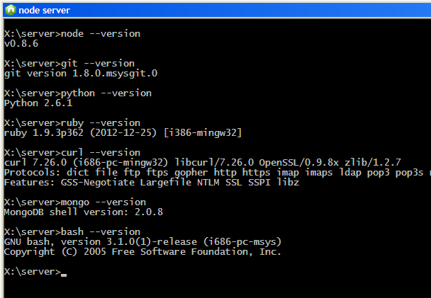

This is the report of an attempt to set a self-contained node.js development or learning environment in Windows, without using administrator privileges, and without much knowledge of Node.js, in a Windows XP box.
The following tools are installed:
After all the installations I can run all these tools from the command line, as if I was in UNIX, and also a bash shell featuring a bunch of the most used commands (MSys).
The computer where I'm doing this does not contain any of these tools. If
one was available in your computer then you might want to use it. To do so you
need to add the appropriate executable directory to the PATH as
shown in the startup script described below.
The working directory will be named server. A
bin directory will hang under server to hold the
executables. In my PC, server is in the X: drive.
X:\server +---bin
As I will install portable versions of the products, a command or script will be needed to start the working environment (the command line) and set the appropriate path variables, instead of setting them the Windows way, to be able to start any of this programs by the bare name, instead of having to type the full path.
The server directory will contain a script named
startServer.cmd to set the working environment, in particular it
will set the path so that sitting in the server directory all the
tools could be started by typing only their name.
This makes the whole thing more self-contained and portable, as the script is part of the tarball and hopefully all its paths are relative, that is, self-relocating.
There is a portable
node.js for Windows by Ivan Malopinsky. The download sports a zip with the
32-bit and the 64-bit versions. We'll use the 32-bit version that comes in the
node-v0.8.6-x86 subdirectory of the archive, so I create a
server\bin\node directory and extract there the content of
node-v0.8.6-x86.
The x86 subdirectory (server\bin\node\x86) contains the
executable node.exe, a node_modules subdirectory
containing npm only, and a few .bat and .cmd files to start node
and npm in the right environment, thus in node.cmd:
@echo off set PATH=%PATH%;%cd% set NODE_PATH=%cd%\node_modules\npm\node_modules;%cd%\node_modules\npm node cmd
Equivalent paths have to be set by the startup script, including the path declarations for the node executable.
The startup script needs to have the paths adjusted. First it defines a
SERVER_DIR variable pointing to the server directory.
All the paths in subdirectories of server will be relative to this
one.
The first version of the script startServer.cmd stored in the
server directory is:
: @echo off : store a reference to the server directory (the path of %0) and CD there set SERVER_DIR=%~p0 cd /D SERVER_DIR : add node to the path and set NODE_PATH (where node searchs for modules) set NODEDIR=%SERVER_DIR%bin\node set PATH=%NODEDIR%;%PATH% set NODE_PATH=%NODEDIR%\node_modules\npm\node_modules;%NODEDIR%\node_modules\npm set NODE_PATH=%NODE_PATH;%NODEDIR%\node_modules
The environment setting must include setting a variable to tell
node where to search for installed modules. Thus:
set NODE_PATH=%NODEDIR%\node_modules\npm\node_modules;%NODEDIR%\node_modules\npm set NODE_PATH=%NODE_PATH%;%NODEDIR%\node_modules
There can be modules in various locations, but those installed from the
%NODE_PATH% directory will end up in a
node_modules directory directly hanging from
%NODE_PATH and node needs this hint to find them.
Python will be needed, so let's install it. It is used by gyp to build
applications that require a build process to install. Node uses the waf build
system written in Python. Usually C++ modules are pre-built for the Windows
versions, but there might be exceptions, like DTrace.
There is a portable Python site offering different versions, I chose 3.2.1.1 (which later appeared to be a wrong choice).
Later on, while installing restify, i got the following error:
npm http GET https://registry.npmjs.org/dtrace-provider/0.2.4 gyp ERR! configure error gyp ERR! stack Error: Python executable "python" is v3.2.1, which is not supported by gyp. gyp ERR! stack You can pass the --python switch to point to Python >= v2.5.0 & < 3.0.0.
So I replaced the installed python by an older version PortablePython_1.1_py2.6.1.exe
and solved the problem.
As of this writing the issue is explained in the node-gyp site,
both the Python thing and a requirement for MS Visual Studio C++ that rears
later.
The portable looks like an installer but it's an executable archive that
expands the files allowing you to choose the target directory. I installed
under server/bin and renamed the folder to simply
python to avoid the spaces in the path and the need to change the
startup script when the version changes.
These lines should make Python available in the command line and to the other applications:
: add the python directory to the path set PATH=%PATH%;SERVER_DIR\bin\python\App\
npm uses git, so let's install a portable version.
There is an article
on portable git by Mark Ashley Bell dated November 2010 that points to a
downloads page. I chose PortableGit-1.8.0-preview20121022.7z from
the downloads
page. It's labeled "beta" but anyway.
The archive contains a file named README.portable with
information on the following steps after expanding the content (218 MB!). I
expanded it in a folder server/bin/git.
To make git available to other applications I follow the instructions of the README:
Since this portable package does not modify any Windows %path% variables, it is not possible to run the git.exe and gitk.exe files directly. Start the Git Bash or Git Cmd instead, or add the cmd/ folder to your %path%.
So I added the following lines to the startup script to be able to run those commands from within the server command line:
: add the git directory and the minimal UNIX to the path set PATH=%SERVER_DIR%bin\git\cmd;%PATH% set PATH=%SERVER_DIR%bin\git\bin;%PATH%
As a bonus, with git comes a minimal UNIX environment, located in the folder
server\bin\git\bin. I added it to the path in order to be able to
leverage the bash shell, like so:
X:\server>bash bash-3.1$ grep Usage: grep [OPTION]... PATTERN [FILE]... Try `grep --help' for more information. bash-3.1$^D
Ruby is required by npm (or was it git?).
There are "installers" with 7z extension in rubyinstaller.org so let's get
one, expand it in server/bin/ruby and add the bin
directory to the path:
: add the ruby directory to the path set PATH=%SERVER_DIR%bin\ruby\bin\;%PATH%
A command-line curl is needed for testing. This program can be downloaded from curl.haxx.se. The Windows binaries are near the end of the long downloads page in archive format, so I can use one for my purpose.
I downloaded an archive file after having used the download wizard (I had to run it with MSIE, as in Chrome it didn't work).
The path addition must appear before the git entry in the path roster, because git includes a smaller version of curl in its binaries directory that gets called instead.
: add curl to the path set PATH=%SERVER_DIR%bin\curl\;%PATH%
I downloaded MongoDB for Windows 32bit version 2.0.8. There are newer versions, but as of 2.2 Windows XP is not supported any more. Running MongoDB in a 32 bit platform imposes restrictions like a 2GB limit in database size, which is not a problem for my development installation. If your Windows is newer then go for the newer MongoDB.
There are detailed instructions for installing in Windows in the MongoDB site.
In this case I don't install MongoDB under the
server\bin directory but somewhere else because I plan to use it
for other purposes. The directory added to the PATH will reflect
it.
Also, in addition to adding MongoDB to the path I added a line to start it spawning a new, minimized, command window.
Update the start script:
: add the mongodb binaries to the path set PATH=X:\mongodb-win32-i386-2.0.8;%PATH% start /min mongod.exe --dbpath X:\server\data
The mongod command starts the server.
It requires a parameter --dbpath with the location of the data
directory. I added it in the startup script, after having created a
data directory directly hanging from the
server directory (server/data).
The database motor confirms it has started with the "waiting for connections" message.
warning: 32-bit servers don't have journaling enabled by default. Please use --journal if you want durability.
[initandlisten] MongoDB starting : pid=7628 port=27017 dbpath=X:\server\data 32-bit host=T61
[initandlisten]
[initandlisten] ** NOTE: when using MongoDB 32 bit, you are limited to about 2 gigabytes of data
[initandlisten] ** see http://blog.mongodb.org/post/137788967/32-bit-limitations
[initandlisten] ** with --journal, the limit is lower
[initandlisten]
[initandlisten] db version v2.0.8, pdfile version 4.5
[initandlisten] git version: a340a57af7cdda865da420704e1d1b2fac0cedc2
[initandlisten] build info: windows sys.getwindowsversion(major=6, minor=0, build=6002,
platform=2, service_pack='Service Pack 2') BOOST_LIB_VERSION=1_42
[initandlisten] options: { dbpath: "X:\server\data" }
[initandlisten] waiting for connections on port 27017
[websvr] admin web console waiting for connections on port 28017
The MongoDB interactive shell can be invoked with the
mongo command:
X:\server>mongo MongoDB shell version: 2.0.8 connecting to: test >
The complement to MongoDB is MongoJS. MongoJS is a Node.js package that lets you access MongoDB using an API that is very similar to MongoDB's JavaScript shell. It's MongoDB js driver.
npm install mongojs
It installs cleanly. Its purpose is to allow the use of MongoDB from within node with low impedance, like so:
db.users.save(
{
email: "srirangan@gmail.com",
password: "iLoveMongo",
sex: "male"
},
function(err, saved) {
if( err || !saved ) {
console.log("User not saved");
} else {
console.log("User saved");
}
}
db.users.find(
{sex: "female"},
function(err, users) {
if( err || !users && 0 < users.length) {
console.log("No female users found");
} else {
users.forEach(
function(femaleUser) {
console.log(femaleUser);
}
);
}
}
);
At this point I archive the content of the server directory in
a zip file. Thus, I'll be able to recover this sort of initial status.
Next I will walkthrough over one or more tutorials for setting a node server that can return RESTful requests from my application's database.
So far the environment is started by running the startup script startServer.cmd in a command window, and is capable of responding to several commands:
I also installed documentation commands:
to have them at hand if I ever need one. Some of the files came with the corresponding program, others were downloaded for the occasion, all of them are within the related application's directories.
The directory tree (pruned) looks like this:
X:\server
+---bin
+---curl
+---git
+---node
+---python
+---ruby
+---data
Except for the MongoDB motor, which I installed elsewhere, I can expand the backup archive in any Windows computer and use it as if it was portable, which in fact it is.
The final startServer script:
: D:\jml\server\startServer @echo off : store a reference to the server directory (drive and path of this file) and CD there set SERVER_DIR=%~dp0 cd /D %SERVER_DIR% : add node to the path and set NODE_PATH (where node searchs for modules) set NODEDIR=%SERVER_DIR%bin\node set PATH=%NODEDIR%;%PATH% set NODE_PATH=%NODEDIR%\node_modules\npm\node_modules;%NODEDIR%\node_modules\npm set NODE_PATH=%NODE_PATH;%NODEDIR%\node_modules : add the python directory to the path set PATH=%SERVER_DIR%bin\python\App\;%PATH% : add the git directory and the minimal UNIX to the path set PATH=%SERVER_DIR%bin\git\cmd;%PATH% set PATH=%SERVER_DIR%bin\git\bin;%PATH% : add the mongodb binaries to the path and start it set PATH=X:\mongodb-win32-i386-2.0.8;%PATH% start /min mongod.exe --dbpath X:\server\data
%SystemRoot%\system32\cmd.exe /k
"X:\server\startServer.cmd"X:\server X:\server\bin\node\node.exe where "X:\server" is the location of the server directory.
The "/k" switch means "run the specified script, don't close
the command window when it ends".
Double-clicking the icon (that has the node looks) opens the command window and runs the script, leaving it ready for doing node stuff:

Next are the steps for moving from a carefully installed node server, to a server capable of responding to RESTful request from my application.